# Les librairies
library(Seurat)
library(ggplot2)
library(reshape2)
library(corrplot)
library(clustree)
library(tidyverse)
# Fonctions auxiliaires
source("Cours/FunctionsAux.R")TP - Partie 1
Analyse pour une condition
1 Démarrage avec Seurat
1.1 Présentation des données
Données de Peripheral Blood Mononuclear Cells (PBMC) de 10X Genomics.
2700 cellules séquencées en Illumina NextSeq 500.
Téléchargez le jeu de données ici ou sur le dépot git de la formation
Dans le dossier “data/pbmc3k_filtered_gene_bc_matrices/filtered_gene_bc_matrices/hg19/” on a trois fichiers
- barcodes.tsv
- genes.tsv
- matrix.mtx
1.2 Création de l’objet Seurat
On commence par lire les données en sortie de CellRanger de 10X à l’aide de la fonction
Read10X().Remarque : pour les formats h5 plus récents, utilisez la fonction
Read10X_h5()
# Load the PBMC dataset
pbmc.data <- Read10X(data.dir = "data/pbmc3k_filtered_gene_bc_matrices/filtered_gene_bc_matrices/hg19/")- Création ensuite de l’objet Seurat avec
CreateSeuratObject():
# Initialize the Seurat object with the raw (non-normalized data).
pbmc <- CreateSeuratObject(counts = pbmc.data,
project = "pbmc3k",
min.cells = 3,
min.features = 200)
class(pbmc)[1] "Seurat"
attr(,"package")
[1] "SeuratObject"1.3 Contenu de l’objet Seurat
pbmcAn object of class Seurat
13714 features across 2700 samples within 1 assay
Active assay: RNA (13714 features, 0 variable features)
1 layer present: countsdim(pbmc)[1] 13714 2700pbmc@assays$RNA$counts[10:20,1:15]11 x 15 sparse Matrix of class "dgCMatrix" [[ suppressing 15 column names 'AAACATACAACCAC-1', 'AAACATTGAGCTAC-1', 'AAACATTGATCAGC-1' ... ]]
HES4 . . . . . . . . . . . . . . .
RP11-54O7.11 . . . . . . . . . . . . . . .
ISG15 . . 1 9 . 1 . . . 3 . . 1 5 .
AGRN . . . . . . . . . . . . . . .
C1orf159 . . . . . . . . . . . . . . .
TNFRSF18 . 2 . . . . . . . . . . . . .
TNFRSF4 . . . . . . . . 1 . . . . . .
SDF4 . . 1 . . . . . . . . . . . .
B3GALT6 . . . . . . 1 . . . . . . . .
FAM132A . . . . . . . . . . . . . . .
UBE2J2 . . . . . . . . 1 . 1 . . 1 .Assays(pbmc)[1] "RNA"1.4 Contrôle qualité
- A la création de l’objet SO, calcul de
nCount_RNAetnFeature_RNA, disponibles dansmeta.data
head(pbmc@meta.data) orig.ident nCount_RNA nFeature_RNA
AAACATACAACCAC-1 pbmc3k 2419 779
AAACATTGAGCTAC-1 pbmc3k 4903 1352
AAACATTGATCAGC-1 pbmc3k 3147 1129
AAACCGTGCTTCCG-1 pbmc3k 2639 960
AAACCGTGTATGCG-1 pbmc3k 980 521
AAACGCACTGGTAC-1 pbmc3k 2163 781# nCount_RNA
sum(pbmc@assays$RNA$counts[,1])[1] 2419#nFeature_RNA
sum(pbmc@assays$RNA$counts[,1]>0)[1] 779- Visualisation par violin plot avec la fonction
VlnPlot():
VlnPlot(pbmc, features = c("nFeature_RNA", "nCount_RNA"), ncol = 2)Warning: Default search for "data" layer in "RNA" assay yielded no results;
utilizing "counts" layer instead.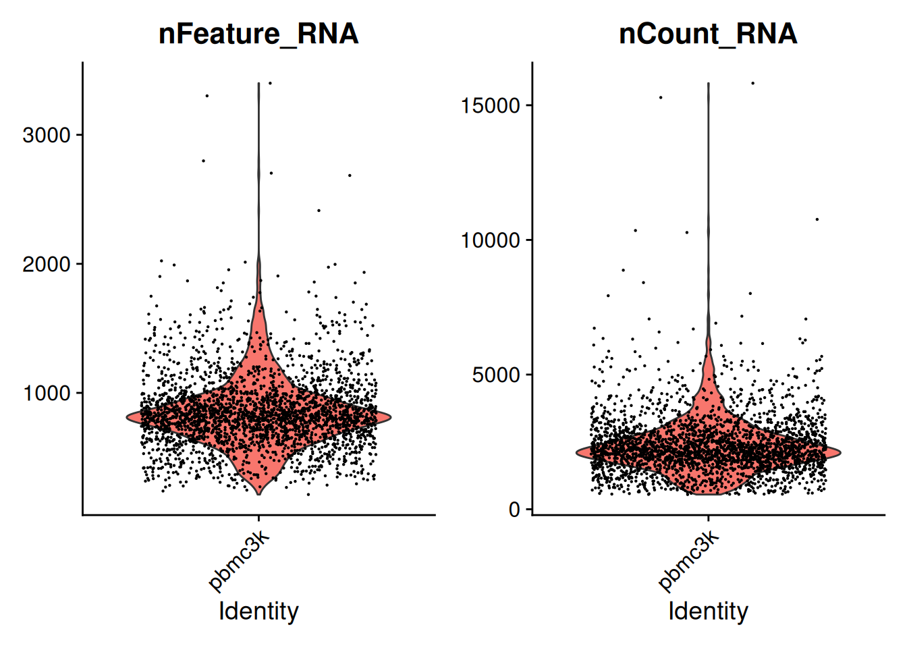
- Ajout de métriques sur les cellules, qui seront accessibles dans SO@meta.data.
pbmc$log10GenesPerUMI <- log10(pbmc$nFeature_RNA) / log10(pbmc$nCount_RNA)
head(pbmc@meta.data) orig.ident nCount_RNA nFeature_RNA log10GenesPerUMI
AAACATACAACCAC-1 pbmc3k 2419 779 0.8545652
AAACATTGAGCTAC-1 pbmc3k 4903 1352 0.8483970
AAACATTGATCAGC-1 pbmc3k 3147 1129 0.8727227
AAACCGTGCTTCCG-1 pbmc3k 2639 960 0.8716423
AAACCGTGTATGCG-1 pbmc3k 980 521 0.9082689
AAACGCACTGGTAC-1 pbmc3k 2163 781 0.8673469VlnPlot(pbmc, features = c("log10GenesPerUMI"))Warning: Default search for "data" layer in "RNA" assay yielded no results;
utilizing "counts" layer instead.
- Mitochondrial ratio :
Avec la fonction PercentageFeatureSet(), on calcule le pourcentage de tous les comptages venant d’un sous-ensemble de gènes.
pbmc[["percent.mt"]] <- PercentageFeatureSet(pbmc,
pattern = "^MT-")
head(pbmc@meta.data, 5) orig.ident nCount_RNA nFeature_RNA log10GenesPerUMI percent.mt
AAACATACAACCAC-1 pbmc3k 2419 779 0.8545652 3.0177759
AAACATTGAGCTAC-1 pbmc3k 4903 1352 0.8483970 3.7935958
AAACATTGATCAGC-1 pbmc3k 3147 1129 0.8727227 0.8897363
AAACCGTGCTTCCG-1 pbmc3k 2639 960 0.8716423 1.7430845
AAACCGTGTATGCG-1 pbmc3k 980 521 0.9082689 1.2244898VlnPlot(pbmc, features = c("percent.mt"))Warning: Default search for "data" layer in "RNA" assay yielded no results;
utilizing "counts" layer instead.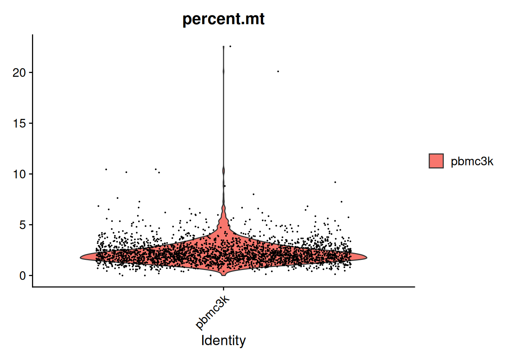
- Scatter plot : La fonction
FeatureScatter()permet de tracer un scatter plot entre deux caractéristiques d’un ensemble de cellules. La correlation de Pearson entre les deux caractéristiques est donnée en haut du graphique.
plot1 <- FeatureScatter(pbmc,
feature1 = "nCount_RNA",
feature2 = "percent.mt")
plot2 <- FeatureScatter(pbmc,
feature1 = "nCount_RNA",
feature2 = "nFeature_RNA")
plot1 + plot2
1.5 Filtrage des cellules
- Filtrage préliminaire des cellules :
dim(pbmc)[1] 13714 2700pbmc <- subset(pbmc,
subset = nFeature_RNA > 200 &
nFeature_RNA < 2500 &
percent.mt < 5)
dim(pbmc)[1] 13714 26382 Normalisation
pbmc <- NormalizeData(pbmc,
normalization.method = "LogNormalize",
scale.factor = 10000)Normalizing layer: countspbmc@assays$RNA$data[10:20,1:5]11 x 5 sparse Matrix of class "dgCMatrix"
AAACATACAACCAC-1 AAACATTGAGCTAC-1 AAACATTGATCAGC-1
HES4 . . .
RP11-54O7.11 . . .
ISG15 . . 1.429744
AGRN . . .
C1orf159 . . .
TNFRSF18 . 1.625141 .
TNFRSF4 . . .
SDF4 . . 1.429744
B3GALT6 . . .
FAM132A . . .
UBE2J2 . . .
AAACCGTGCTTCCG-1 AAACCGTGTATGCG-1
HES4 . .
RP11-54O7.11 . .
ISG15 3.55831 .
AGRN . .
C1orf159 . .
TNFRSF18 . .
TNFRSF4 . .
SDF4 . .
B3GALT6 . .
FAM132A . .
UBE2J2 . .# pbmc[["RNA"]]$data[10:20,1:5]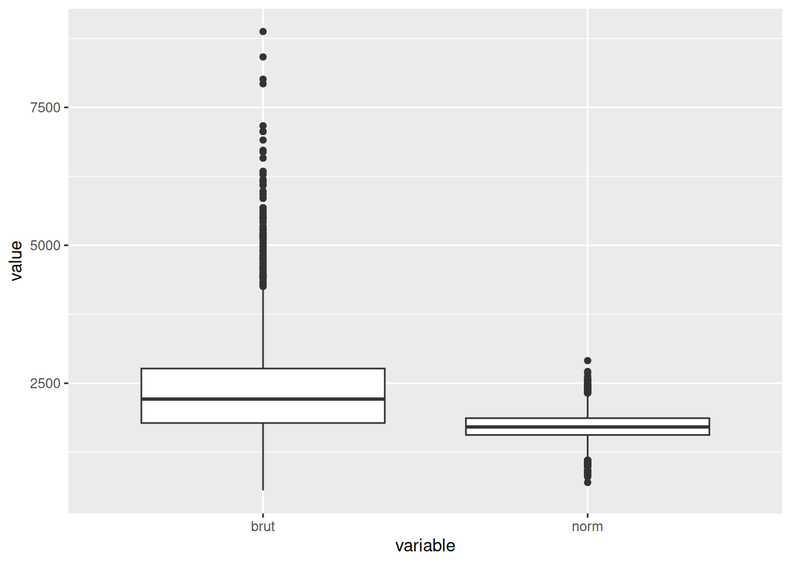
3 Identification des gènes HVG
- HVG = High Variable Gene (feature)
Fonction FindVariableFeatures()
pbmc <- FindVariableFeatures(pbmc,
selection.method = "vst",
nfeatures = 2000)Finding variable features for layer countslength(VariableFeatures(pbmc))[1] 2000# Identification du top 10 des HVG
top10<-head(VariableFeatures(pbmc), 10)
top10 [1] "PPBP" "LYZ" "S100A9" "IGLL5" "GNLY" "FTL" "PF4" "FTH1"
[9] "GNG11" "S100A8"# plot variable features with and without labels
plot1 <- VariableFeaturePlot(pbmc)
plot2 <- LabelPoints(plot = plot1, points = top10, repel = TRUE)
plot2
4 Réduction de dimension
4.1 Données centrées réduites
- Pour chaque cellule, les données sont centrées et réduites en utilisant la fonction
ScaleData():
pbmc<-ScaleData(pbmc) #J=2000 par défautCentering and scaling data matrixdim(pbmc@assays$RNA$scale.data) # on a plus que J=2000 gènes [1] 2000 2638pbmc[["RNA"]]$scale.data[10:20,1:5] AAACATACAACCAC-1 AAACATTGAGCTAC-1 AAACATTGATCAGC-1
TNFRSF25 4.90920130 -0.25311519 -0.25311519
TNFRSF9 -0.06151481 -0.06151481 -0.06151481
CTNNBIP1 -0.24853762 -0.24853762 -0.24853762
RBP7 -0.25683994 -0.25683994 -0.25683994
SRM -0.37377967 -0.37377967 -0.37377967
UBIAD1 -0.20293535 -0.20293535 -0.20293535
DRAXIN -0.05092317 -0.05092317 -0.05092317
PRDM2 -0.25977198 -0.25977198 -0.25977198
RP3-467K16.4 -0.03763710 -0.03763710 -0.03763710
EFHD2 1.79135797 -0.47108943 -0.47108943
DDI2 -0.10678468 -0.10678468 -0.10678468
AAACCGTGCTTCCG-1 AAACCGTGTATGCG-1
TNFRSF25 -0.25311519 -0.25311519
TNFRSF9 -0.06151481 -0.06151481
CTNNBIP1 -0.24853762 5.65233432
RBP7 -0.25683994 -0.25683994
SRM -0.37377967 -0.37377967
UBIAD1 -0.20293535 -0.20293535
DRAXIN -0.05092317 -0.05092317
PRDM2 -0.25977198 -0.25977198
RP3-467K16.4 -0.03763710 -0.03763710
EFHD2 1.69525721 -0.47108943
DDI2 -0.10678468 -0.106784684.2 Analyse en Composantes Principales (PCA)
- PCA avec la fonction
RunPCA():
pbmc <- RunPCA(pbmc, features = VariableFeatures(object = pbmc))
#str(pbmc@reductions$pca)- On retrouve les coordonnées des projections des cellules sur les différents axes principaux (composantes principales)
head(pbmc@reductions$pca@cell.embeddings) #head(pbmc[["pca"]]@cell.embeddings) PC_1 PC_2 PC_3 PC_4 PC_5
AAACATACAACCAC-1 -4.7298963 -0.5182652 -0.7809100 -2.3089783 -0.07158848
AAACATTGAGCTAC-1 -0.5176254 4.5923068 5.9605692 6.8677364 -1.96144350
AAACATTGATCAGC-1 -3.1892555 -3.4694432 -0.8469782 -1.9956538 -5.10640863
AAACCGTGCTTCCG-1 12.7931387 0.1008253 0.6292662 -0.3737225 0.21943186
AAACCGTGTATGCG-1 -3.1290640 -6.3478829 1.2656002 3.0147877 7.84529636
AAACGCACTGGTAC-1 -3.1090537 0.9263107 -0.6651675 -2.3198198 -2.00491810
PC_6 PC_7 PC_8 PC_9 PC_10
AAACATACAACCAC-1 0.1302351 1.6305902 -1.1835333 -1.2531218 1.9017172
AAACATTGAGCTAC-1 2.7846838 1.5152072 -0.3565057 0.8262122 0.5841946
AAACATTGATCAGC-1 2.1237116 0.3366152 3.7307061 0.9038532 1.1314319
AAACCGTGCTTCCG-1 -2.8411001 0.8129484 0.1346161 0.6185381 -3.4406550
AAACCGTGTATGCG-1 -1.2989767 -2.4097103 -0.4188483 2.8826110 -1.1897990
AAACGCACTGGTAC-1 1.4841790 0.2697326 -0.4232240 0.2070918 -1.5410813
PC_11 PC_12 PC_13 PC_14 PC_15
AAACATACAACCAC-1 -0.7469317 -3.6227859 -1.0923521 -0.8299280 -0.41423134
AAACATTGAGCTAC-1 0.5833986 -0.8428401 2.1607398 2.8959563 0.01277594
AAACATTGATCAGC-1 2.0349191 -2.4289863 -0.5893520 0.2687666 -1.03153190
AAACCGTGCTTCCG-1 1.9380377 -0.5849945 -0.7689500 -2.0778841 -0.10377355
AAACCGTGTATGCG-1 3.6331320 0.4757108 0.8131060 -0.9935867 -0.78032945
AAACGCACTGGTAC-1 1.3820617 1.3258157 0.7831396 1.0865275 -0.69441950
PC_16 PC_17 PC_18 PC_19 PC_20
AAACATACAACCAC-1 -0.1667659 1.3901968 1.2668482 -0.4059202 -3.26200402
AAACATTGAGCTAC-1 -3.0467129 -1.3015509 2.5244726 -0.8753636 -1.28593447
AAACATTGATCAGC-1 -0.7757100 -1.2387931 -0.5321277 -1.9387377 0.38430873
AAACCGTGCTTCCG-1 -1.3086938 0.3567795 2.5729923 0.2871480 0.03140099
AAACCGTGTATGCG-1 2.0470772 -2.4443057 -2.6370221 -0.1505250 -0.11453115
AAACGCACTGGTAC-1 1.5020371 -2.9702952 -1.6088333 2.1194451 -0.74465142
PC_21 PC_22 PC_23 PC_24 PC_25
AAACATACAACCAC-1 -0.8044574 1.39738163 0.8210954 -1.3727481 0.8893382
AAACATTGAGCTAC-1 -2.8424796 -3.19138506 1.8913685 -1.2605250 -0.0476576
AAACATTGATCAGC-1 1.2138482 3.91522305 -1.0472086 0.3942886 2.2398715
AAACCGTGCTTCCG-1 -1.0642733 -0.07433779 -0.8209373 -2.4386504 0.7021453
AAACCGTGTATGCG-1 0.7300434 -2.75332788 0.4803736 -0.4307320 -1.8407319
AAACGCACTGGTAC-1 -1.6080063 1.46157816 1.6391051 -0.1199198 -1.3238403
PC_26 PC_27 PC_28 PC_29 PC_30
AAACATACAACCAC-1 -0.1686696 -0.7449966 1.9500463 -2.8470588 -1.925945
AAACATTGAGCTAC-1 1.0994049 1.7573898 -0.8853787 -1.4698781 -2.215689
AAACATTGATCAGC-1 0.3151403 -2.9097625 -2.0871345 -2.2684527 -1.019997
AAACCGTGCTTCCG-1 -0.6452441 -0.1645419 -1.4029670 -1.5635607 -1.763138
AAACCGTGTATGCG-1 -0.5388121 0.5554110 -1.0873997 0.1178189 -2.348448
AAACGCACTGGTAC-1 -0.2268096 0.6537098 0.1459151 -1.5890840 0.996214
PC_31 PC_32 PC_33 PC_34 PC_35
AAACATACAACCAC-1 -1.906082 -0.7656870 0.7886686 1.3853574 1.5402516
AAACATTGAGCTAC-1 -0.215038 -1.1936284 -0.1686905 1.2041247 -0.3123097
AAACATTGATCAGC-1 -1.897772 2.4233484 -0.7815424 -1.5597281 -1.6488542
AAACCGTGCTTCCG-1 1.409053 0.6080335 0.3028171 -0.9818352 -1.1761443
AAACCGTGTATGCG-1 -2.743220 0.6241355 0.4181416 1.8161397 1.0631378
AAACGCACTGGTAC-1 -2.552378 0.4034883 1.2881619 0.2156316 3.7902464
PC_36 PC_37 PC_38 PC_39 PC_40
AAACATACAACCAC-1 -0.4709257 0.5823822 2.3699291 -0.10286778 0.8498509
AAACATTGAGCTAC-1 -0.5263865 -0.8320428 -0.6666582 -0.30002044 -0.7472624
AAACATTGATCAGC-1 0.1215326 -3.0499889 -0.2789845 -0.06744133 5.1766898
AAACCGTGCTTCCG-1 -1.4034396 -0.4412297 -1.3932791 1.99461070 2.3022438
AAACCGTGTATGCG-1 1.9968850 1.3638343 -1.1448679 1.50693340 1.6030213
AAACGCACTGGTAC-1 0.1497877 0.5171061 -1.5497541 2.35178025 3.7894147
PC_41 PC_42 PC_43 PC_44 PC_45
AAACATACAACCAC-1 -2.0278224 0.3993873 1.5301073 -0.05669722 -1.6056211
AAACATTGAGCTAC-1 -1.3132579 -0.1912740 -1.7883161 2.24749897 -0.3352678
AAACATTGATCAGC-1 -0.7672299 -0.6881223 -0.1645176 1.15925443 0.6397097
AAACCGTGCTTCCG-1 -2.0485870 -1.2859544 -1.7926969 -0.55108914 -1.3044307
AAACCGTGTATGCG-1 1.0682280 1.5781181 0.5295320 0.09055095 0.5060710
AAACGCACTGGTAC-1 1.9080883 1.3414018 -1.4944880 0.30049835 1.6629658
PC_46 PC_47 PC_48 PC_49 PC_50
AAACATACAACCAC-1 -1.2376991 -1.5445309 -0.06487091 -1.3644992 -1.850344
AAACATTGAGCTAC-1 -0.4085108 -0.2676481 1.34738807 0.6105851 -0.937978
AAACATTGATCAGC-1 -2.7725345 -0.9087761 2.21864708 1.4649055 -1.697077
AAACCGTGCTTCCG-1 2.2426737 -0.4382262 -1.07258964 -0.2180610 -1.397243
AAACCGTGTATGCG-1 1.3333163 0.8716102 2.44704729 -0.7814614 -1.423808
AAACGCACTGGTAC-1 -2.3002705 -2.1368305 -1.52897602 -4.2308756 2.504853#head(Embeddings(pbmc@reductions$pca))et visualisation de la projection des cellules dans le premier plan factoriel avec la fonction DimPlot() :
DimPlot(pbmc, reduction = "pca") + NoLegend()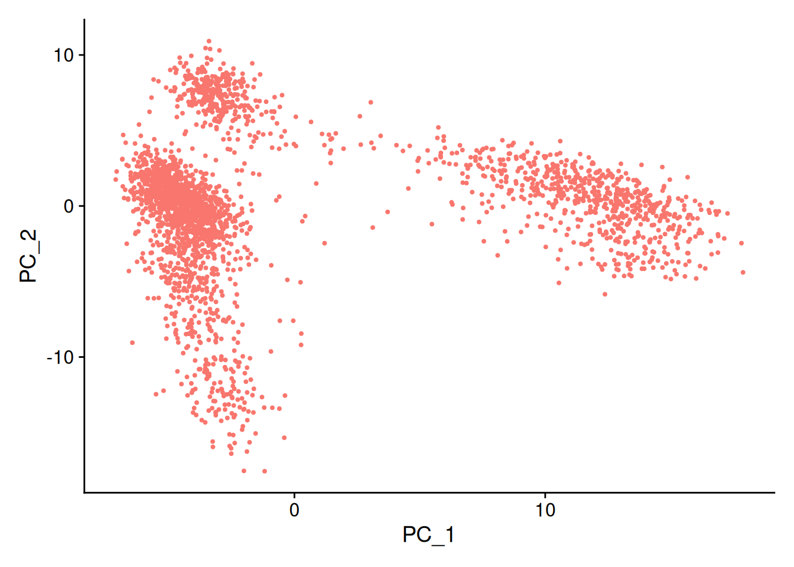
- Les corrélations entre les gènes et les composantes principales
head(pbmc@reductions$pca@feature.loadings) PC_1 PC_2 PC_3 PC_4 PC_5
PPBP 0.01099604 0.01146074 -0.151144423 0.10523514 0.003096941
LYZ 0.11623192 0.01472508 -0.013108690 -0.04405875 0.049940083
S100A9 0.11541415 0.01895221 -0.024150801 -0.05767468 0.085394285
IGLL5 -0.00798812 0.05454531 0.049492513 0.06659287 0.004602839
GNLY -0.01524022 -0.13375308 0.041473043 0.06885718 0.104553128
FTL 0.11829235 0.01871171 -0.009999514 -0.01545480 0.038734715
PC_6 PC_7 PC_8 PC_9 PC_10
PPBP 0.005308804 0.021112666 -0.007701717 0.042702220 0.001298817
LYZ 0.065486104 -0.013708433 0.006657157 -0.002035887 0.015913141
S100A9 0.045807349 -0.003137051 0.063717096 0.017137221 0.029138205
IGLL5 0.006222827 0.015061134 0.045578299 0.013921585 0.023746826
GNLY -0.001275149 -0.082948858 0.016078390 -0.036780806 0.041399439
FTL -0.046640119 0.009680557 0.024903349 0.003667952 0.019948653
PC_11 PC_12 PC_13 PC_14 PC_15
PPBP 0.044020489 -0.02764200 -0.048718156 0.030253077 0.001301383
LYZ -0.006371409 0.01123933 -0.009742031 -0.003449945 0.004666029
S100A9 -0.011329598 0.01232222 0.014687679 0.003793412 0.005404640
IGLL5 0.015195889 -0.01223040 0.006693592 -0.013182569 -0.004634656
GNLY 0.045745409 -0.06718859 -0.014243779 -0.009978784 0.009922867
FTL -0.002201067 -0.01069180 0.007835243 -0.003370871 -0.011379048
PC_16 PC_17 PC_18 PC_19 PC_20
PPBP -0.020436183 0.038896107 -0.018880202 -0.006859114 0.009717831
LYZ 0.002101387 0.004669109 -0.014684718 0.001542854 -0.009855238
S100A9 0.001019185 0.002457562 -0.001837584 -0.010504425 -0.000932504
IGLL5 0.033661582 0.021024849 -0.011891474 -0.022892441 0.001722167
GNLY 0.020252829 -0.020281310 0.007822144 -0.001627259 -0.016265711
FTL -0.000404715 -0.001897411 0.006207873 0.001360729 -0.008301933
PC_21 PC_22 PC_23 PC_24 PC_25
PPBP -0.003682344 0.019185348 0.0157964037 -0.0098933436 0.0163844718
LYZ -0.001080054 0.005496887 0.0007297516 0.0023728052 -0.0003284453
S100A9 -0.001054728 0.001152190 0.0009399519 -0.0016107354 -0.0049228065
IGLL5 0.034600218 0.011854872 -0.0219612794 -0.0346193653 -0.0406285144
GNLY 0.005084025 -0.009222598 -0.0021356328 -0.0003439495 0.0045448319
FTL -0.005471384 0.006262384 0.0030293344 -0.0153818321 0.0056253160
PC_26 PC_27 PC_28 PC_29 PC_30
PPBP -0.0007434476 0.0044226610 -0.001026155 0.000798845 0.007009058
LYZ 0.0034627023 0.0113083080 -0.001003315 -0.010181692 -0.008580675
S100A9 -0.0022007739 -0.0052319934 -0.002756004 0.005052421 0.013284830
IGLL5 -0.0215674707 -0.0206707968 -0.019351875 -0.017224663 -0.003505189
GNLY 0.0147624273 0.0001703585 0.014658787 0.010918080 -0.013969533
FTL -0.0008913738 0.0148616291 0.005287117 0.006427075 0.009550525
PC_31 PC_32 PC_33 PC_34 PC_35
PPBP 0.011986099 -0.0012677810 -0.012135503 0.003097202 0.019345515
LYZ 0.002787907 0.0004725835 -0.001332287 0.001732315 0.001711492
S100A9 0.008076281 0.0149072310 -0.004035674 0.006246613 -0.003367078
IGLL5 0.005980662 -0.0003435713 0.007639258 -0.046188843 -0.004632120
GNLY -0.016241112 0.0067626995 -0.006301384 0.006327327 -0.002115970
FTL 0.007047457 0.0108593633 0.008657190 -0.011990723 -0.004833070
PC_36 PC_37 PC_38 PC_39 PC_40
PPBP -0.001629042 0.009281317 -0.012248697 -0.0008895063 0.006630538
LYZ -0.005923579 0.009351109 0.009500018 -0.0060068521 0.009532182
S100A9 0.001841687 0.006004587 0.015752929 -0.0111664122 0.002682784
IGLL5 0.009212870 -0.014644805 -0.012928144 0.0026579886 0.040012098
GNLY 0.018303833 0.003935195 0.012970469 -0.0156944846 -0.003775726
FTL -0.010808224 -0.002714531 0.007777826 0.0017173921 -0.003069231
PC_41 PC_42 PC_43 PC_44 PC_45
PPBP -0.001158127 -0.012618831 -0.014369253 -0.010402441 0.0149117248
LYZ -0.013648280 0.015305561 -0.010220385 -0.008651105 0.0011649727
S100A9 0.005557478 0.011208278 -0.001045997 0.015661436 -0.0001570778
IGLL5 -0.021625741 -0.002793236 -0.004695153 0.027831416 0.0232241095
GNLY -0.000608909 -0.016671359 -0.004380076 -0.023231431 -0.0095451464
FTL 0.003243067 0.018173114 0.001133262 0.003750280 -0.0131130662
PC_46 PC_47 PC_48 PC_49 PC_50
PPBP 0.0168679150 -0.002919507 0.0146879731 0.002818112 -0.006928429
LYZ -0.0020607644 -0.004193269 -0.0062516511 -0.001431060 -0.002114065
S100A9 0.0003487152 -0.001009039 -0.0005159989 -0.011774351 -0.005130372
IGLL5 0.0017532089 -0.003117951 -0.0185440360 -0.004349378 -0.026562178
GNLY 0.0233080854 -0.022851243 -0.0001049188 -0.009402023 -0.003026156
FTL -0.0002612623 0.005562892 -0.0075343458 -0.008705549 0.008240141corrplot(pbmc[["pca"]]@feature.loadings[VariableFeatures(pbmc)[1:10],1:5],method="ellipse")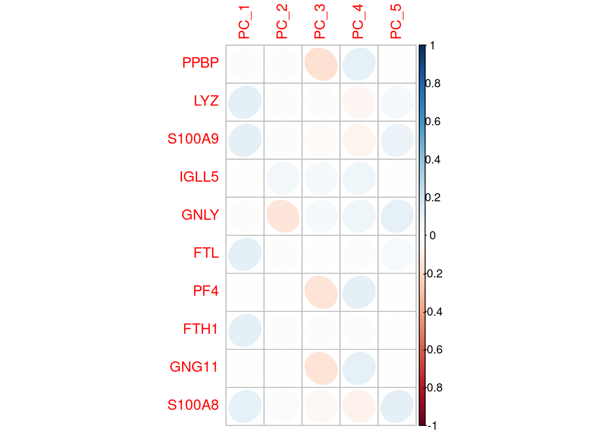
- Gènes les plus corrélés avec les composantes principales :
print(pbmc[["pca"]], dims = 1:3, nfeatures = 5)PC_ 1
Positive: CST3, TYROBP, LST1, AIF1, FTL
Negative: MALAT1, LTB, IL32, IL7R, CD2
PC_ 2
Positive: CD79A, MS4A1, TCL1A, HLA-DQA1, HLA-DQB1
Negative: NKG7, PRF1, CST7, GZMB, GZMA
PC_ 3
Positive: HLA-DQA1, CD79A, CD79B, HLA-DQB1, HLA-DPB1
Negative: PPBP, PF4, SDPR, SPARC, GNG11 VizDimLoadings(pbmc, dims = 1:2, reduction = "pca",nfeatures=20)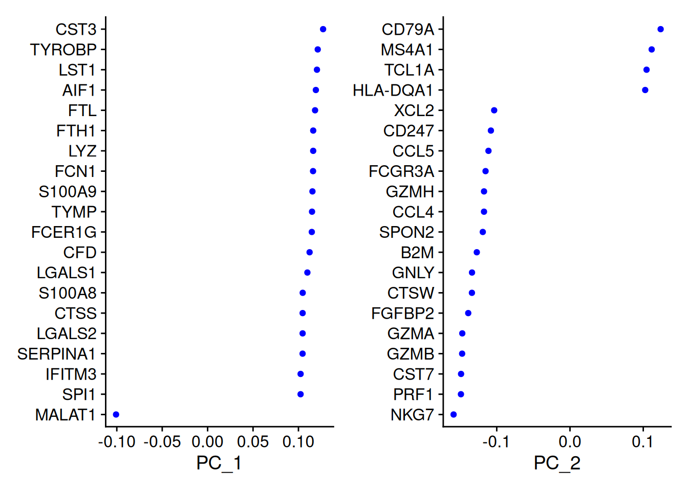
DimHeatmap(pbmc, dims = 1:2, cells = 500, balanced = TRUE)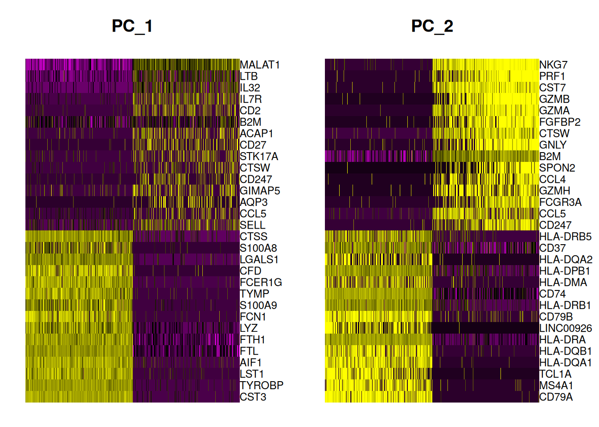
- Pour choisir le nombre de composantes principales à conserver :
ElbowPlot(pbmc)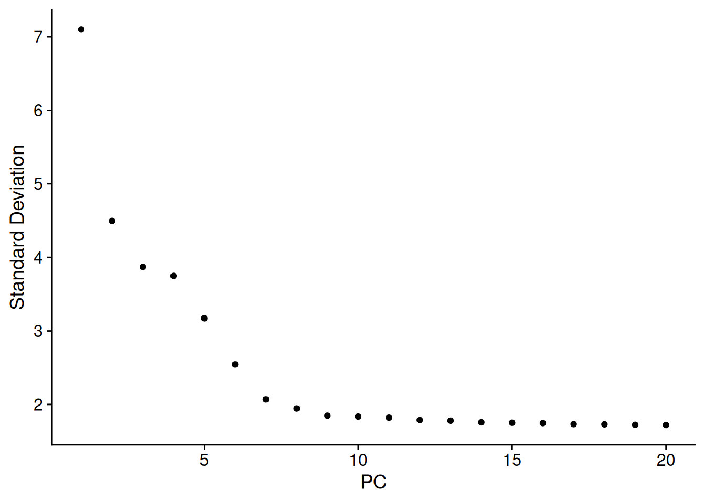
4.3 UMAP
pbmc <- FindNeighbors(pbmc, dims = 1:10)
pbmc <- RunUMAP(pbmc, dims = 1:10)Warning: The default method for RunUMAP has changed from calling Python UMAP via reticulate to the R-native UWOT using the cosine metric
To use Python UMAP via reticulate, set umap.method to 'umap-learn' and metric to 'correlation'
This message will be shown once per sessionDimPlot(pbmc, reduction = "umap")+NoLegend()
5 Clustering
5.1 Pour une résolution fixée
Algorithme de Louvain avec résolution de \(0.5\)
Fonction
FindClusters():
pbmc <- FindClusters(pbmc, resolution = 0.5)Modularity Optimizer version 1.3.0 by Ludo Waltman and Nees Jan van Eck
Number of nodes: 2638
Number of edges: 95927
Running Louvain algorithm...
Maximum modularity in 10 random starts: 0.8728
Number of communities: 9
Elapsed time: 0 secondsAnalyse du clustering obtenu :
- Effectifs par classe :
Rem: la fonction
EffPlot()est une fonction auxiliaire disponible dans le fichier FunctionAux.R.
table(pbmc@meta.data$seurat_clusters)
0 1 2 3 4 5 6 7 8
684 481 476 344 291 162 155 32 13 EffPlot(pbmc,resolution=0.5,clustname = "seurat_clusters")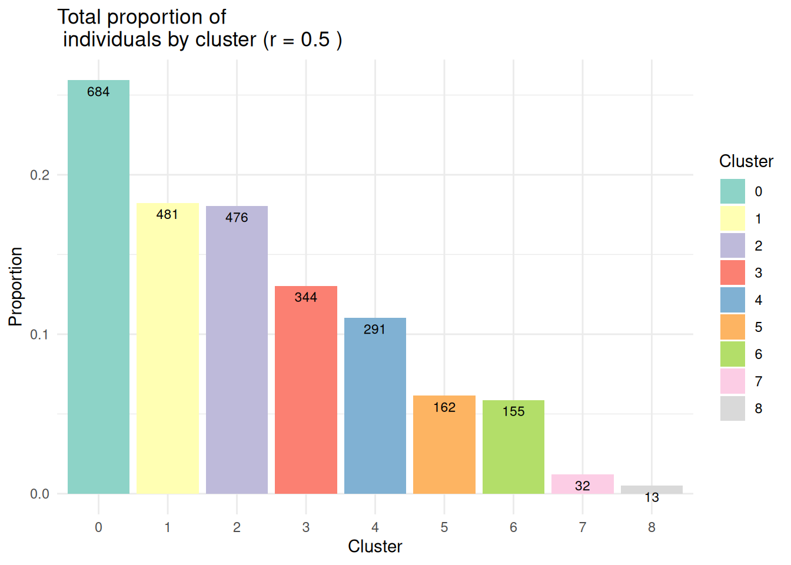
DimPlot(pbmc, reduction = "umap") 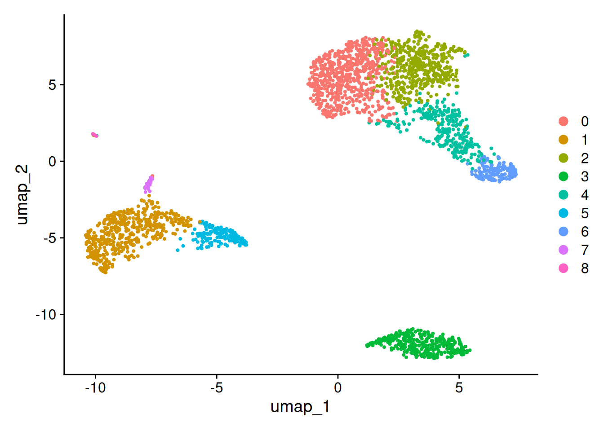
5.2 Choix de la résolution ?
- Faire tourner pour plusieurs valeurs de résolution
list_resolutions<-seq(0.1,1,by=0.1)
for (r in list_resolutions){
pbmc <- FindClusters(pbmc, resolution = r, cluster.name = paste0("Clusters_", r))
}Modularity Optimizer version 1.3.0 by Ludo Waltman and Nees Jan van Eck
Number of nodes: 2638
Number of edges: 95927
Running Louvain algorithm...
Maximum modularity in 10 random starts: 0.9623
Number of communities: 4
Elapsed time: 0 seconds
Modularity Optimizer version 1.3.0 by Ludo Waltman and Nees Jan van Eck
Number of nodes: 2638
Number of edges: 95927
Running Louvain algorithm...
Maximum modularity in 10 random starts: 0.9346
Number of communities: 7
Elapsed time: 0 seconds
Modularity Optimizer version 1.3.0 by Ludo Waltman and Nees Jan van Eck
Number of nodes: 2638
Number of edges: 95927
Running Louvain algorithm...
Maximum modularity in 10 random starts: 0.9091
Number of communities: 7
Elapsed time: 0 seconds
Modularity Optimizer version 1.3.0 by Ludo Waltman and Nees Jan van Eck
Number of nodes: 2638
Number of edges: 95927
Running Louvain algorithm...
Maximum modularity in 10 random starts: 0.8890
Number of communities: 9
Elapsed time: 0 seconds
Modularity Optimizer version 1.3.0 by Ludo Waltman and Nees Jan van Eck
Number of nodes: 2638
Number of edges: 95927
Running Louvain algorithm...
Maximum modularity in 10 random starts: 0.8728
Number of communities: 9
Elapsed time: 0 seconds
Modularity Optimizer version 1.3.0 by Ludo Waltman and Nees Jan van Eck
Number of nodes: 2638
Number of edges: 95927
Running Louvain algorithm...
Maximum modularity in 10 random starts: 0.8564
Number of communities: 10
Elapsed time: 0 seconds
Modularity Optimizer version 1.3.0 by Ludo Waltman and Nees Jan van Eck
Number of nodes: 2638
Number of edges: 95927
Running Louvain algorithm...
Maximum modularity in 10 random starts: 0.8411
Number of communities: 10
Elapsed time: 0 seconds
Modularity Optimizer version 1.3.0 by Ludo Waltman and Nees Jan van Eck
Number of nodes: 2638
Number of edges: 95927
Running Louvain algorithm...
Maximum modularity in 10 random starts: 0.8281
Number of communities: 11
Elapsed time: 0 seconds
Modularity Optimizer version 1.3.0 by Ludo Waltman and Nees Jan van Eck
Number of nodes: 2638
Number of edges: 95927
Running Louvain algorithm...
Maximum modularity in 10 random starts: 0.8159
Number of communities: 11
Elapsed time: 0 seconds
Modularity Optimizer version 1.3.0 by Ludo Waltman and Nees Jan van Eck
Number of nodes: 2638
Number of edges: 95927
Running Louvain algorithm...
Maximum modularity in 10 random starts: 0.8036
Number of communities: 11
Elapsed time: 0 secondshead(pbmc@meta.data) orig.ident nCount_RNA nFeature_RNA log10GenesPerUMI percent.mt
AAACATACAACCAC-1 pbmc3k 2419 779 0.8545652 3.0177759
AAACATTGAGCTAC-1 pbmc3k 4903 1352 0.8483970 3.7935958
AAACATTGATCAGC-1 pbmc3k 3147 1129 0.8727227 0.8897363
AAACCGTGCTTCCG-1 pbmc3k 2639 960 0.8716423 1.7430845
AAACCGTGTATGCG-1 pbmc3k 980 521 0.9082689 1.2244898
AAACGCACTGGTAC-1 pbmc3k 2163 781 0.8673469 1.6643551
RNA_snn_res.0.5 seurat_clusters Clusters_0.1 Clusters_0.2
AAACATACAACCAC-1 2 6 0 0
AAACATTGAGCTAC-1 3 2 3 3
AAACATTGATCAGC-1 2 1 0 0
AAACCGTGCTTCCG-1 1 4 1 1
AAACCGTGTATGCG-1 6 8 2 2
AAACGCACTGGTAC-1 2 1 0 0
Clusters_0.3 Clusters_0.4 Clusters_0.5 Clusters_0.6
AAACATACAACCAC-1 0 2 2 1
AAACATTGAGCTAC-1 3 3 3 3
AAACATTGATCAGC-1 0 2 2 1
AAACCGTGCTTCCG-1 1 1 1 2
AAACCGTGTATGCG-1 2 6 6 6
AAACGCACTGGTAC-1 0 2 2 1
Clusters_0.7 Clusters_0.8 Clusters_0.9 Clusters_1
AAACATACAACCAC-1 1 6 1 6
AAACATTGAGCTAC-1 3 2 2 2
AAACATTGATCAGC-1 1 1 1 1
AAACCGTGCTTCCG-1 2 4 4 4
AAACCGTGTATGCG-1 6 8 7 8
AAACGCACTGGTAC-1 1 1 1 1- Lien entre les clusterings obtenus via l’indicateur ARI (Adjusted Rand Index) et visuellement avec le package
clustreepar exemple
# Visualisation ARI - fonctions auxiliaires
source("Cours/FunctionsAux.R")
ari_matrix <- ARI_matrix(pbmc, list_resolutions)
heatmapari(ari_matrix, list_resolutions)
# Nb de classes
NbCluster_gg(pbmc, list_resolutions)
# Comparaison visuelle des clusterings obtenus
p1<-DimPlot(pbmc,reduction = "umap",group.by = "Clusters_0.3")
p2<-DimPlot(pbmc,reduction = "umap",group.by = "Clusters_0.4")
p1+p2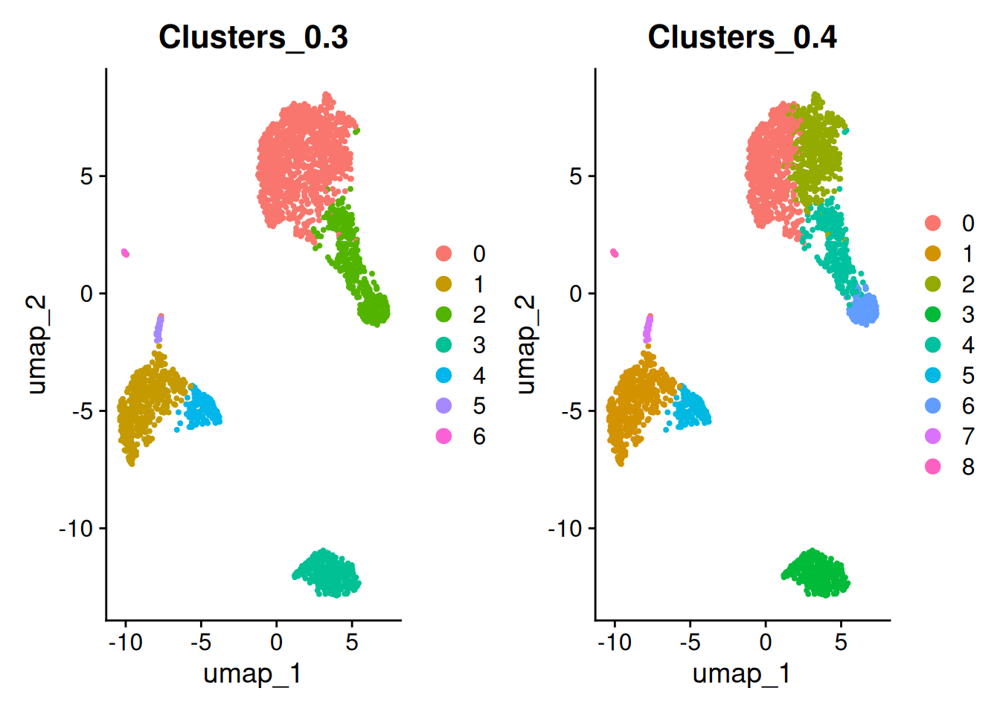
# clustree
clusterplot<-clustree(pbmc, prefix = "Clusters_")
clusterplot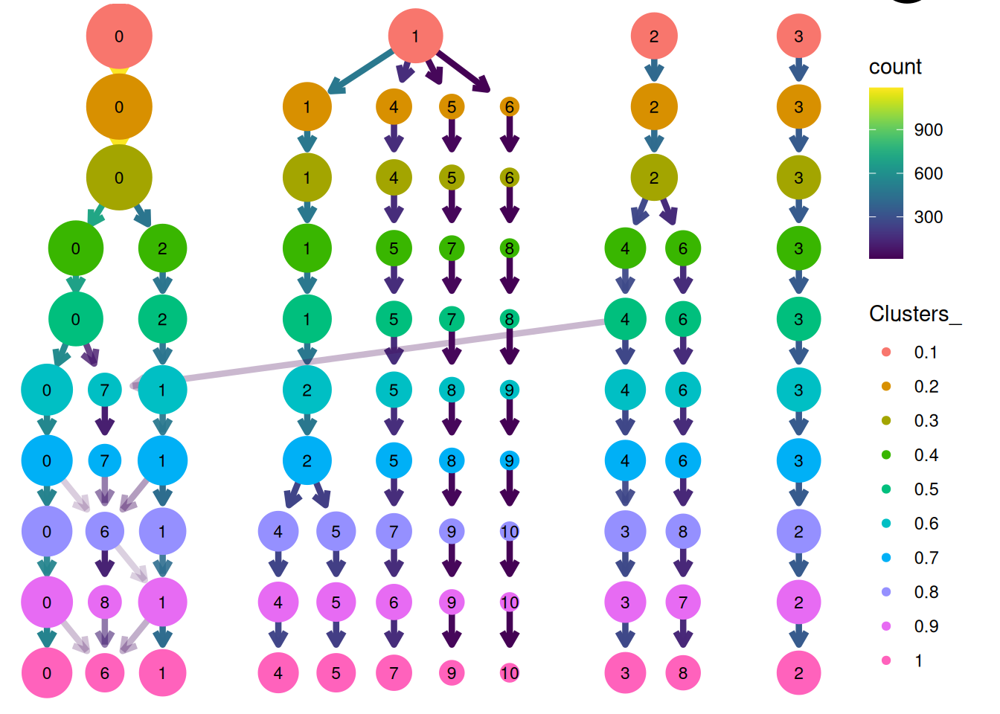
- Pour la suite, on va se focaliser sur le clustering obtenu avec la résolution 0.5.
Idents(pbmc)<-pbmc@meta.data$Clusters_0.5
pbmc$seurat_clusters<-pbmc@meta.data$Clusters_0.5
EffPlot(pbmc,resolution=0.5,clustname="seurat_clusters")
DimPlot(pbmc,reduction = "umap")
6 Détection des gènes marqueurs
6.1 Pour la classe 3
- Test de Wilcoxon avec la fonction
FindMarkers(...,test.use="wilcox")
GeneMkWilcox3<-FindMarkers(pbmc,
test.use = "wilcox",
ident.1 = 3,
logfc.threshold=0.5)
head(GeneMkWilcox3) p_val avg_log2FC pct.1 pct.2 p_val_adj
CD79A 0.000000e+00 6.911221 0.936 0.041 0.000000e+00
MS4A1 0.000000e+00 5.718520 0.855 0.053 0.000000e+00
CD79B 2.655974e-274 4.636747 0.916 0.142 3.642403e-270
LINC00926 2.397625e-272 7.379757 0.564 0.009 3.288103e-268
TCL1A 9.481783e-271 6.688051 0.622 0.022 1.300332e-266
HLA-DQA1 2.942395e-266 3.971836 0.890 0.118 4.035201e-262sum(GeneMkWilcox3$p_val_adj<0.01)[1] 640ggplot(GeneMkWilcox3,aes(x=p_val_adj))+
geom_density()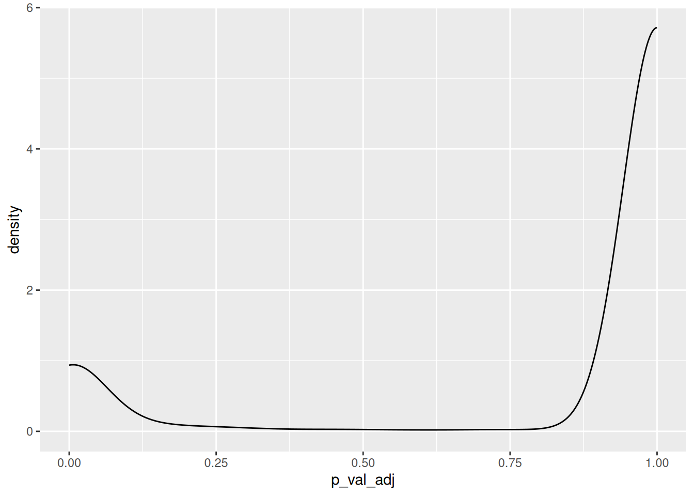
- Calcul des AUC avec
FindMarkers(...,test.use="roc")
GeneMkAUC3<-FindMarkers(pbmc,
test.use = "roc",
ident.1 = 3,
logfc.threshold=0.5)
head(GeneMkAUC3) myAUC avg_diff power avg_log2FC pct.1 pct.2
CD74 0.983 2.024653 0.966 2.986542 1.000 0.821
CD79A 0.965 2.987583 0.930 6.911221 0.936 0.041
HLA-DRA 0.961 1.915271 0.922 2.853029 1.000 0.494
CD79B 0.944 2.413475 0.888 4.636747 0.916 0.142
HLA-DPB1 0.931 1.626958 0.862 2.503943 0.985 0.449
HLA-DQA1 0.921 2.119572 0.842 3.971836 0.890 0.118ggplot(GeneMkAUC3,aes(x=myAUC))+
geom_density()
- Sélection des gènes marqueurs pour la classe 3 en appliquant des filtres
GeneMkAUC3$gene<-rownames(GeneMkAUC3)
GeneMkWilcox3$gene<-rownames(GeneMkWilcox3)
GeneMkCl3_merge<-merge(GeneMkAUC3,GeneMkWilcox3[,c(1,5,6)],by="gene")
head(GeneMkCl3_merge) gene myAUC avg_diff power avg_log2FC pct.1 pct.2 p_val
1 7SK.2 0.507 0.06749594 0.014 3.1493614 0.015 0.001 3.196337e-05
2 A1BG 0.486 -0.09773320 0.028 -0.7124347 0.038 0.066 4.920702e-02
3 A1BG-AS1 0.500 0.01856972 0.000 0.5966779 0.012 0.012 9.962685e-01
4 A2M-AS1 0.493 -0.06402623 0.014 -4.5169835 0.000 0.013 3.296422e-02
5 AAAS 0.490 -0.05940675 0.020 -0.7344712 0.017 0.038 5.848320e-02
6 AAGAB 0.491 -0.16157690 0.018 -1.5524967 0.020 0.037 1.098229e-01
p_val_adj
1 0.4383456
2 1.0000000
3 1.0000000
4 1.0000000
5 1.0000000
6 1.0000000SelectGene<-GeneMkCl3_merge%>%
filter(myAUC>0.9)%>%
filter(avg_log2FC>2)%>%
arrange(desc(myAUC))
dim(SelectGene)[1] 10 9head(SelectGene) gene myAUC avg_diff power avg_log2FC pct.1 pct.2 p_val
1 CD74 0.983 2.024653 0.966 2.986542 1.000 0.821 5.255736e-185
2 CD79A 0.965 2.987583 0.930 6.911221 0.936 0.041 0.000000e+00
3 HLA-DRA 0.961 1.915271 0.922 2.853029 1.000 0.494 1.951945e-183
4 CD79B 0.944 2.413475 0.888 4.636747 0.916 0.142 2.655974e-274
5 HLA-DPB1 0.931 1.626958 0.862 2.503943 0.985 0.449 2.406279e-165
6 HLA-DQA1 0.921 2.119572 0.842 3.971836 0.890 0.118 2.942395e-266
p_val_adj
1 7.207717e-181
2 0.000000e+00
3 2.676897e-179
4 3.642403e-270
5 3.299971e-161
6 4.035201e-262- Pour visualiser, on peut s’appuyer sur les fonctions
VlnPlot(),FeaturePlot(),DotPlot(),RidgePlot()de Seurat
VlnPlot(pbmc, features = SelectGene$gene[1:3], layer = "counts", log = TRUE)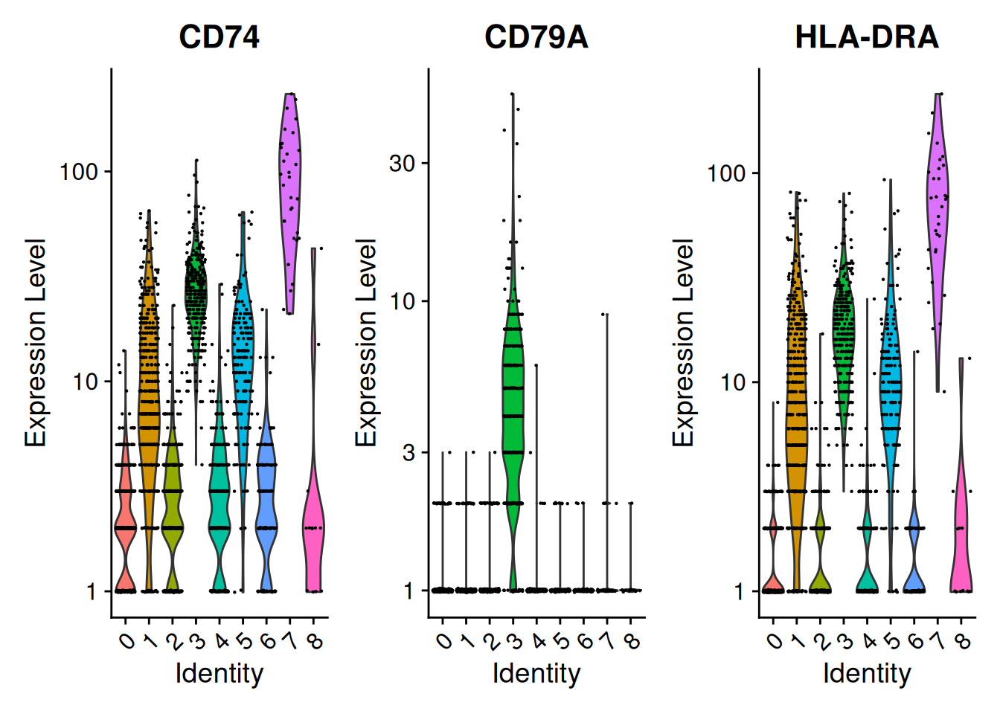
VlnPlot(pbmc, features = SelectGene$gene[1:3], layer = "data", log = TRUE)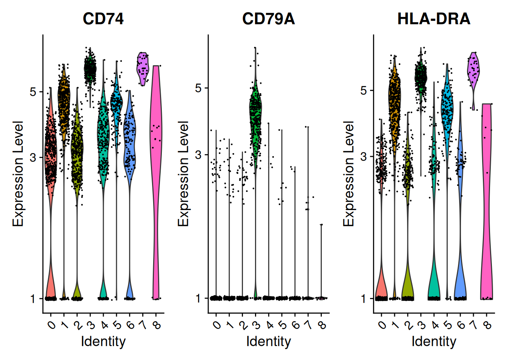
FeaturePlot(pbmc, features = SelectGene$gene[1:3])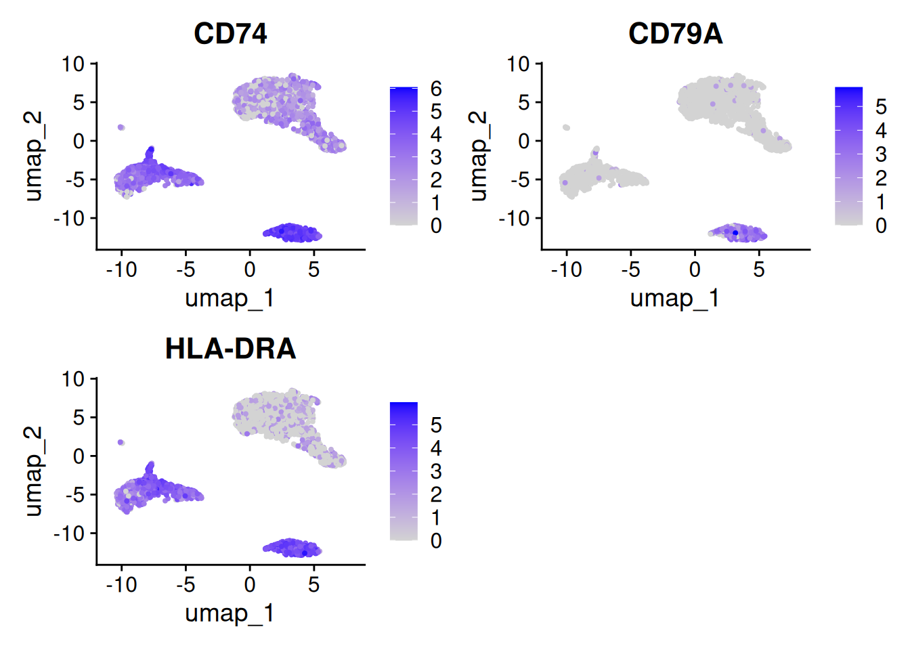
DotPlot(pbmc,features = SelectGene$gene[1:3])
RidgePlot(pbmc,features = SelectGene$gene[1:3])Picking joint bandwidth of 0.265Picking joint bandwidth of 0.0228Picking joint bandwidth of 0.286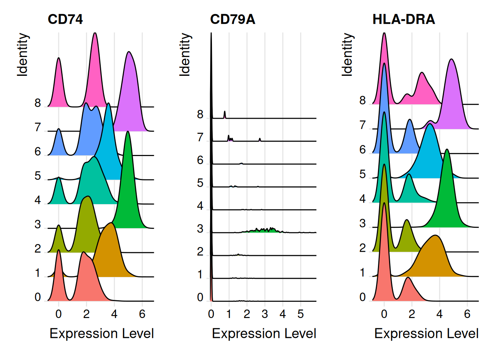
6.2 Gènes marqueurs pour toutes les classes
- Utilisation de la fonction
FindAllMarkers()
Je vous donne ici le code qui a permis d’obtenir les résultats. Pour des raisons de temps calcul, on va récupérer les résultats sauvegardés.
#GeneMkWilcox<-FindAllMarkers(pbmc,
# logfc.threshold = 0.1,
# test.use = "wilcox")
#saveRDS(GeneMkWilcox, file = "data/GeneMkWilcox.rds")
GeneMkWilcox<-readRDS("data/GeneMkWilcox.rds")
GeneMkWilcox$gene<-rownames(GeneMkWilcox)
head(GeneMkWilcox)
table(GeneMkWilcox$cluster)
table(GeneMkWilcox$cluster[which(GeneMkWilcox$p_val_adj<0.01)])#GeneMkAUC<-FindAllMarkers(pbmc,
# logfc.threshold = 0.1,
# test.use = "roc")
#saveRDS(GeneMkAUC, file = "data/GeneMkAUC.rds")
GeneMkAUC<-readRDS("data/GeneMkAUC.rds")
GeneMkAUC$gene<-rownames(GeneMkAUC)
head(GeneMkAUC) myAUC avg_diff power avg_log2FC pct.1 pct.2 cluster gene
RPS12 0.827 0.5059247 0.654 0.7387061 1.000 0.991 0 RPS12
RPS6 0.826 0.4762402 0.652 0.6934523 1.000 0.995 0 RPS6
RPS27 0.824 0.5047203 0.648 0.7372604 0.999 0.992 0 RPS27
RPL32 0.821 0.4294911 0.642 0.6266075 0.999 0.995 0 RPL32
RPS14 0.811 0.4334133 0.622 0.6336957 1.000 0.994 0 RPS14
CYBA 0.192 -1.1237197 0.616 -1.7835258 0.659 0.913 0 CYBAtable(GeneMkAUC$cluster)
0 1 2 3 4 5 6 7 8
70 150 9 52 20 220 132 132 323 ggplot(GeneMkAUC,aes(x=cluster,y=myAUC))+
geom_violin(aes(color=cluster))+
stat_summary(fun.y=function(z) { quantile(z,0.9) }, geom="point", shape=20, size=2)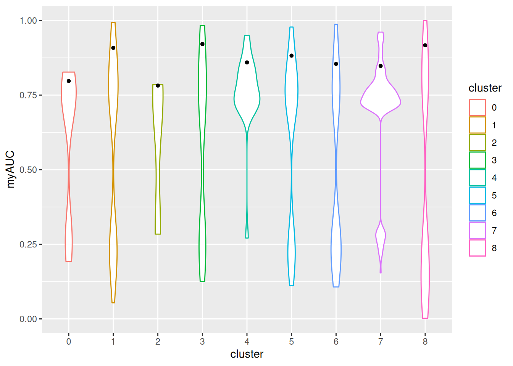
GeneMkAUC %>%
group_by(cluster) %>%
arrange(desc(myAUC))%>%
filter(avg_log2FC > 1) %>%
slice_head(n = 10) %>%
ungroup() -> top10
DoHeatmap(pbmc, features = top10$gene) + NoLegend()Warning in DoHeatmap(pbmc, features = top10$gene): The following features were
omitted as they were not found in the scale.data slot for the RNA assay: CALM3,
GPX1.2, TPM4.1, HLA-DQB1.1, HLA-DRB5.3, HLA-DQA1.1, CST3.2, CD74.4, HLA-DRA.5,
HLA-DRB1.5, HLA-DPA1.3, HLA-DPB1.3, HLA-C.1, GZMA.1, CST7.1, CTSW.1, NKG7.1,
FTL.2, SAT1.2, IFITM3.1, FTH1.2, COTL1.1, AIF1.1, FCER1G.1, LST1.1, HCST.1,
PTPRCAP.1, CD3D.4, IL32.3, HLA-DRB1.3, HLA-DPB1.1, HLA-DRA.3, CD74.3, CD3E.1,
CD3D.2, IL32.1, LTB.1, FTH1.1, S100A6.1, FTL.1, TYROBP.1, CD3D, LDHB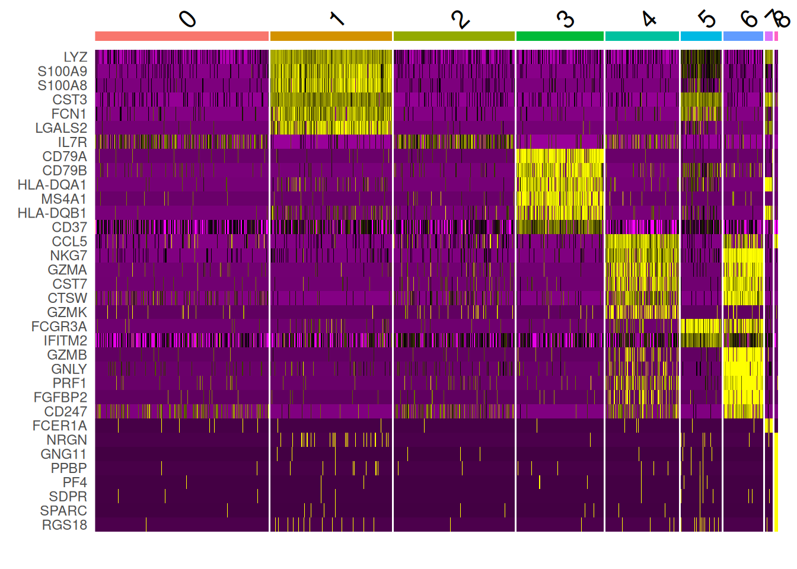
Rem: warning car certains gènes dans le top10 ne sont pas des gènes HVG. Or la fonction DoHeatMap s’appuie sur les gènes HVG et les données centrées réduites (scale.data) par défaut.
6.3 Gènes marqueurs entre deux classes
- Fonction
FindMarkers()en précisantident.1etident.2
GeneMkCl3vsCl5<-FindMarkers(pbmc,
test.use="roc",
ident.1=3,
ident.2=5,
logfc.threshold=0.1)
ggplot(GeneMkCl3vsCl5,aes(x=myAUC))+
geom_density()
SelectCl3vsCl5<-GeneMkCl3vsCl5%>%
filter(myAUC>0.9)%>%
arrange(desc(avg_log2FC))
head(SelectCl3vsCl5) myAUC avg_diff power avg_log2FC pct.1 pct.2
CD79A 0.965 3.003015 0.930 7.010338 0.936 0.043
MS4A1 0.918 2.300367 0.836 5.388669 0.855 0.086
PTPRCAP 0.905 2.200564 0.810 4.568654 0.843 0.167
LTB 0.928 1.811911 0.856 2.918803 0.936 0.660
CD74 0.975 1.370397 0.950 2.005788 1.000 0.988
RPSA 0.932 1.154822 0.864 1.743024 0.988 0.951DoHeatmap(pbmc[,which(pbmc$Clusters_0.5 %in% c(3,5))],
features = rownames(SelectCl3vsCl5),
assay = "RNA",slot = "data") +
NoLegend()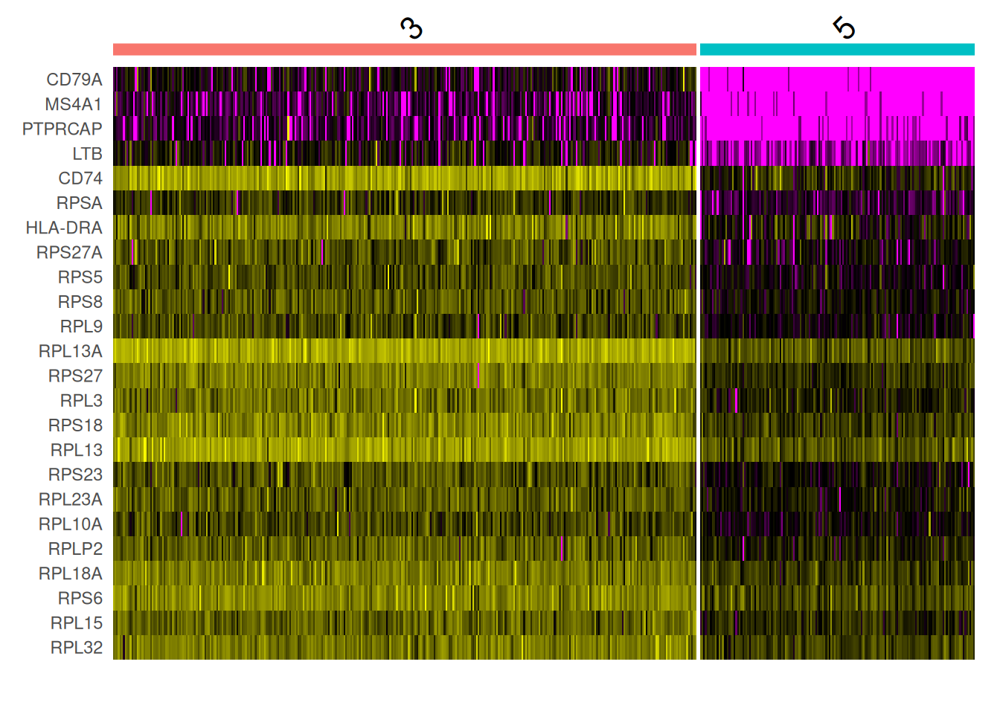
FeaturePlot(pbmc, features = rownames(SelectCl3vsCl5)[1:3])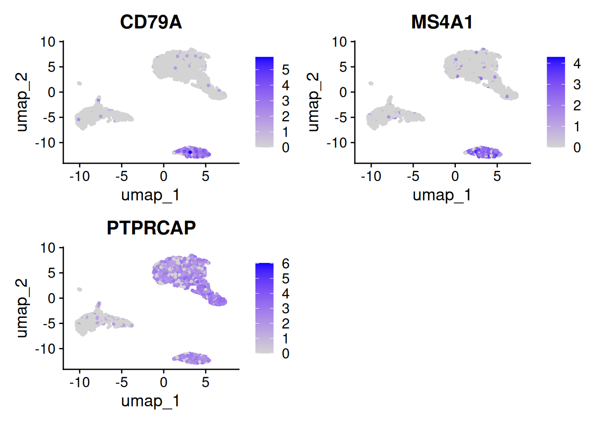
DotPlot(pbmc[,which(pbmc$Clusters_0.5 %in% c(3,5))],features = rownames(SelectCl3vsCl5)[1:10])+
theme(axis.text.x = element_text(angle = 90, vjust = 0.5, hjust=1))Warning: Scaling data with a low number of groups may produce misleading
results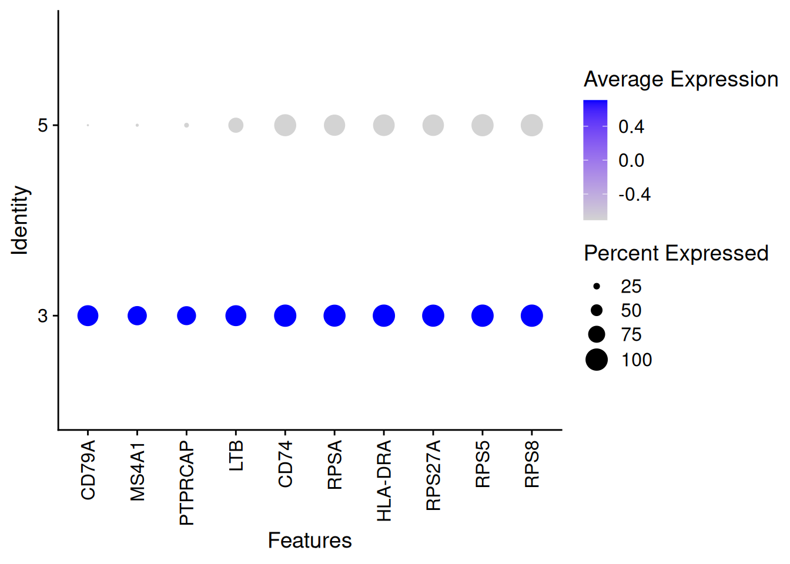